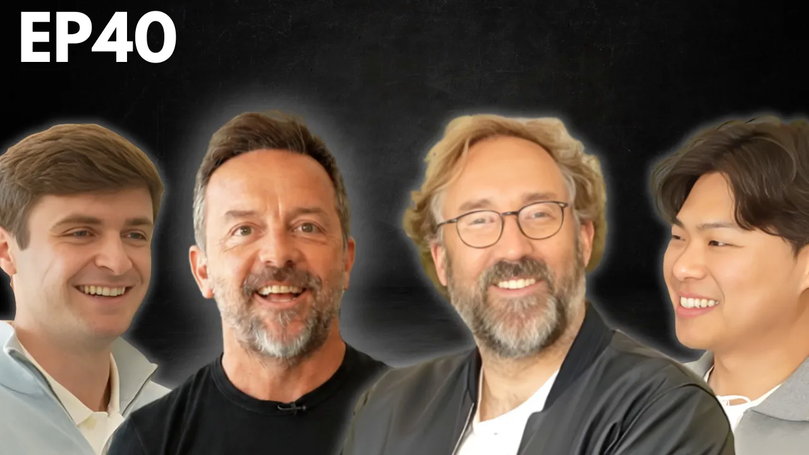
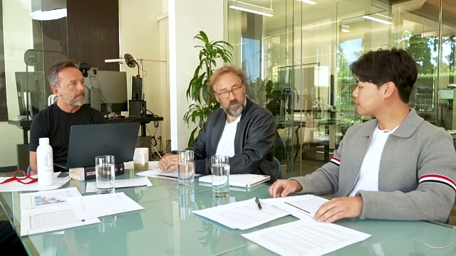
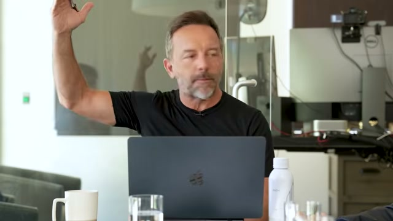
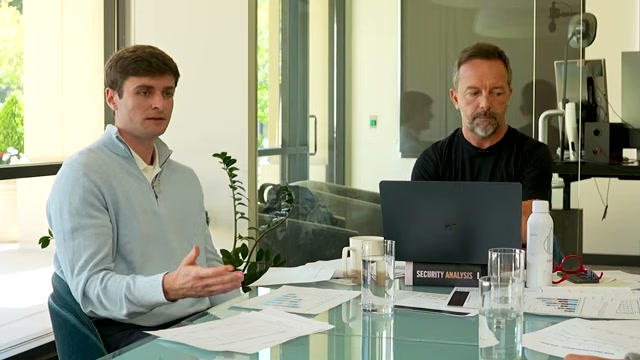

A60-Second Verdict
This video is a useful follow-on to the existing SpaceX/SPCX watchlist file, not a new independent investment idea.
- Core signal: the speakers frame SpaceX/X.AI as a possible fourth hyperscaler, with terrestrial AI compute monetization now more important than the long-term orbital-compute option.
- What changed versus the prior SpaceX note: this adds podcast-level discussion of data-center build speed, Google/Anthropic compute deals, Cursor coding-data optionality, and AI capex return math.
- Market message: the managers still like the secular AI setup but have trimmed exposure after a steep semiconductor run, expecting consolidation before possible higher highs.
- Decision boundary: keep SpaceX/SPCX in diligence, but do not treat podcast claims about IPO terms, deal size, revenue, or hyperscaler rank as verified facts until checked against primary or live sources.
Processor Decision
BSignal Scorecard
Maturity Sliders
CBasic Information
| Field | Value |
|---|---|
| Title | The SpaceX IPO, Fable 5, AI Capex Update & Market Check w/ Gavin Baker, Andrew Fox & Clark Tang |
| Channel / participants | BG2 Pod; Brad Gerstner with Gavin Baker, Andrew Fox, and Clark Tang |
| Distribution context | 22V / Jordi Visser weekly podcast email dated 2026-06-14 |
| YouTube publish date | 2026-06-11 |
| Duration | 1:20:47 |
| Source UID | youtube:Tx9jT2c6e3U |
| Processed content | Portalmail redirect, YouTube metadata, automatic-caption transcript, provider pasted text, thumbnail, and five sampled video frames. |
| Not processed | The two other videos in the same email, 22V website/PDF links, live IPO/listing data, market prices, primary deal documents, and external claim verification. |
youtube:Tx9jT2c6e3U. It is a related follow-on to the 2026-06-04 SpaceX IPO email report.DContent Extraction
| Thesis Part | Plain-English Explanation | Initial Route |
|---|---|---|
| SpaceX as three-part platform | The discussion frames SpaceX as launch/Starlink connectivity, terrestrial AI compute, and xAI frontier-model optionality. | Update SPCX file |
| Terrestrial compute business | The key near-term variable is how fast xAI can bring data centers online and sell compute profitably to customers such as Google or Anthropic. | Verify deals |
| Orbital compute | The speakers present space-based compute as potentially cheaper if Starship achieves rapid two-stage reusability, but not required for the current IPO thesis. | Long-term option |
| Cursor and coding data | Cursor is framed as an underappreciated way to pair proprietary coding data with xAI compute, possibly improving frontier model positioning. | Confirm terms |
| AI capex ROI | The episode argues inference revenue and frontier-lab revenue may justify higher capex estimates, especially if gross margins remain high. | Model check |
| Market exposure | Both managers describe trimming AI/semiconductor exposure after a large run while keeping a constructive longer-term view. | Risk monitor |
EContent Evaluation
| Dimension | Assessment | RAG |
|---|---|---|
| Plausibility | Medium-high. The AI compute logic is coherent and consistent with the broader physical-infrastructure thesis, but the most important valuation and deal claims remain unverified in this pass. | Amber |
| Evidence strength | Medium. The video is rich and internally consistent, but it is still a podcast discussion and provider-distributed summary rather than a primary filing. | Amber |
| Decision readiness | Medium-low. Strong enough to update the diligence checklist, not enough for trade or sizing action. | Amber |
| Contradiction risk | Medium. The market-check section itself warns that AI semis may need consolidation after a steep move. | Amber |
FInvestment Impact
| Area | Impact | Confirmation Score | Implication |
|---|---|---|---|
| Space Economy | Strengthens the view that SpaceX/SPCX should be analyzed as a platform with space, connectivity, and compute engines. | 7/10 | Merge into the existing SpaceX diligence file rather than create a separate idea. |
| AI Infrastructure | Reinforces that data-center speed, power, cooling, and capex efficiency are central to the AI thesis. | 8/10 | Add xAI/SpaceX to the AI infrastructure monitoring map. |
| AI Market Structure | Adds a possible new hyperscaler/neo-cloud competitor to the model-owner and compute-seller landscape. | 7/10 | Track whether compute providers capture economics before model owners do. |
| Semiconductors and AI beta | The speakers remain constructive but acknowledge stretched near-term positioning after a sharp semiconductor run. | 6/10 | Use as a risk-control input, not a bearish thesis by itself. |
GConcrete Actions
Add terrestrial data-center build speed, xAI customer terms, Google/Anthropic deal verification, Cursor data advantage, and orbital-compute cost assumptions.
Use source_uid: youtube:Tx9jT2c6e3U as the exact-source identifier in future intake checks.
Check IPO/listing status, price, valuation, compute contracts, revenue claims, and any current SPCX instrument details with primary or live sources.
The episode supports the secular AI buildout but also flags that semiconductor momentum may need time after a steep run.
HDetailed Appendix For Understanding
This appendix separates the practical investment signal from the more speculative optionality in the discussion.
Video Evidence Pack




The near-term investment issue is terrestrial compute, not orbital compute.
Orbital data centers are the most distinctive part of the story, but the speakers repeatedly come back to data-center build speed, power access, chip access, and compute monetization. That makes the near-term diligence question more like hyperscaler analysis than space-company analysis.
The valuation case depends on whether compute revenue is durable.
If xAI can sell compute at high margins and high utilization, a large capex program can look rational. If utilization or pricing falls, the same buildout becomes a valuation and financing risk.
Cursor changes the question from capacity to proprietary data.
The Cursor discussion matters because compute alone can commoditize. Proprietary coding data or workflow integration could make xAI more defensible if it translates into better model performance or stronger user distribution.
The managers are constructive but not complacent.
The market-check section is useful because it does not present AI as a straight-line trade. It explicitly says some exposure was trimmed after a sharp move, which makes the signal better suited for research queueing than immediate buying.
ISource Handling
Portalmail link resolved to YouTube video Tx9jT2c6e3U. A04 extracted automatic captions with no browser authentication and no OpenAI fallback. Transcript artifact: [local Mac path redacted in portal copy]. Obsidian note created at DragonShield Research Obsidian/01 Signals/2026/2026-06/2026-06-14 BG2 - SpaceX Fable AI Capex Market Check.md. The two other videos in the attached 22V podcast email were left unprocessed because A22 is one source per report.